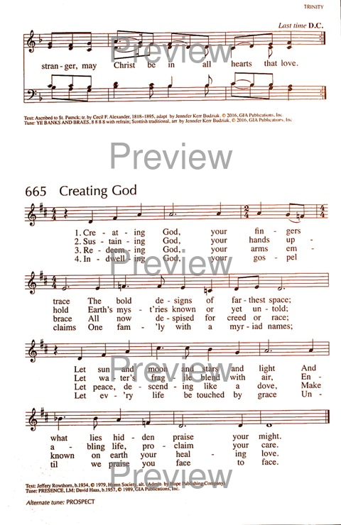

|
|
【創造之神，你指所造】 |
|
1 Creating God, your fingers trace 2 Sustaining God, your hands uphold 3 Redeeming God, your arms embrace 4 Indwelling God, your gospel claims
|
創造之神，你指所造－ |
|
https://hymnary.org/hymn/RS2016/page/861
 |
|
|
|
|
-

創造之神，祢指所造 Creating God, Your Fingers Trace - 2019 聖詩頌唱會 https://www.youtube.com/watch?v=28t96oI_x2s - Creating God Your Fingers Trace - arr. John Ferguson
https://youtu.be/1cXrvx_4uQ8 -
https://www.youtube.com/watch?v=N6xJCnXM5jo
| Text: | Creating God, your fingers trace |
| Author: | Jeffrey W. Rowthorn |
| Tune: | CHRISTOPHER DOCK |
| Composer: | Philip K. Clemens |
| Short Name: | Jeffery W. Rowthorn |
| Full Name: | Rowthorn, Jeffery W., 1934- |
| Birth Year: | 1934 |
Jeffery W. Rowthorn (b. Newport, Gwent, Wales, 1934)
wrote this text in 1978 while he was Chapel Minister at Yale Divinity School, New Haven, Connecticut. The text was first published in Laudamus (1980), a hymnal supplement edited by Rowthorn and used at the Yale Divinity School.
Rowthorn graduated from Cambridge and Oxford Universities, Union Theological Seminary in New York, and Cuddeson Theological College in Oxford. Ordained in 1963 in the Church of England, he served several congregations in England before immigrating to the United States, where he was chaplain at Union Theological Seminary and a faculty member in liturgics at the Yale Institute of Sacred Music, which he helped to establish. He was then elected Suffragan Bishop of the Episcopal Diocese of Connecticut. The writer of several hymns, Rowthorn was also coeditor with Russell Schulz-Widmar of A New Hymnal for Colleges and Schools (1991). Rowthorn has since moved to Paris, where he is Bishop in Charge of the American Churches in Europe.
--hymnopedia.com/
Notes
Scripture References:
st. 1 = Ps. 147:4-5, Col. 1:16
st. 2 = Ps. 147:8
Jeffery W. Rowthorn (PHH 523) wrote this text based on Psalm 148 in 1974, the year he first started writing hymn texts. One of two winners in the Hymn Society of America's contest for "New Psalms for Today," the text was published in The Hymn of April 1979.
In Psalm 148 both heavenly and earthly creatures bring praise to God (see additional comments at PHH 148). Rowthorn uses the psalm as the backdrop for a text that is not so much a paraphrase in the traditional sense of that term but a new text that affirms four great tenets of the Christian faith: the God we worship created the entire cosmos (st. 1), sustains the ecology of life (st. 2), redeems his people from oppression and death (st. 3), and dwells by his Spirit in his people, the church (st. 4).
Liturgical Use:
The beginning of each stanza contains the themes of this text: creation,
providence, redemption, and incarnation; in the light of these, the hymn
has many possible uses in Christian worship.
--Psalter Hymnal Handbook
Notes
Scripture References:
st. 1 = Ps. 147:4-5, Col. 1:16
st. 2 = Ps. 147:8
Jeffery W. Rowthorn (PHH 523) wrote this text based on Psalm 148 in 1974, the year he first started writing hymn texts. One of two winners in the Hymn Society of America's contest for "New Psalms for Today," the text was published in The Hymn of April 1979.
In Psalm 148 both heavenly and earthly creatures bring praise to God (see additional comments at PHH 148). Rowthorn uses the psalm as the backdrop for a text that is not so much a paraphrase in the traditional sense of that term but a new text that affirms four great tenets of the Christian faith: the God we worship created the entire cosmos (st. 1), sustains the ecology of life (st. 2), redeems his people from oppression and death (st. 3), and dwells by his Spirit in his people, the church (st. 4).
Liturgical Use:
The beginning of each stanza contains the themes of this text: creation,
providence, redemption, and incarnation; in the light of these, the hymn
has many possible uses in Christian worship.
--Psalter Hymnal Handbook
Tune Information
| Title: | CHRISTOPHER DOCK |
| Composer: | Philip K. Clemens (1982) |
| Meter: | 8.8.8.8 with refrain |
| Incipit: | 11231 12312 34321 |
| Key: | G Major |
| Source: | Assembly Songs, 1983 |
| Copyright: | Copyright ©1983 Philip K. Clemens |
History of Hymns: “Creating God, Your Fingers Trace”
By C. Michael Hawn
"Creating God, Your Fingers Trace"
by Jeffery Rowthorn
The United Methodist Hymnal, 109
Creating God, your fingers trace
the bold designs of farthest space;
let sun and moon and stars and light
and what lies hidden praise your might.*
* Copyright © 1979 by The Hymn Society of America (Admin. Hope Publishing Co.)
Imagine that the first hymn you ever wrote won a contest. Then imagine your
surprise that you won the contest, even through you were unaware that the
hymn had been submitted on your behalf! Jeffery Rowthorn (b. 1934), a native
of Wales and bishop suffragan in the Episcopal Church in the United States,
had just that experience. The following is his account of the composition of
this hymn text:
My first hymn, written in 1974, was in fulfillment of an assignment that I had given the students in a contemporary worship course at Yale Divinity School: compose a new psalm paraphrase. I had never done this myself, so I chose Psalm 148 and some years later my paraphrase was one of two winning texts in the 1979 Hymn Society of America’s “New Psalms for Today” competition (Rowthorn, 29).
The hymn was subsequently published in the Hymn Society’s journal The Hymn (April 1979) and in Laudamus (1980), a supplement used for daily chapel worship at Yale Divinity School.
"Creating God" explores active images of the work of God. Because each
stanza starts with a participle, the singer is drawn not into a God of
history whose work is complete, but a God whose work is ongoing in myriad
ways. Successive stanzas begin with "Sustaining God," "Redeeming God," and
“Indwelling God.” The complete text may be found at https://hymnary.org/text/creating_god_your_fingers_trace.
The hymn does not fall neatly into a threefold, Trinitarian pattern. Indeed,
it is based on a psalm. Yet the work of the Trinity is apparent in the
modifiers "creating," "redeeming," and "sustaining" — images that some have
used as alternative language for the Trinity.
The text is a paraphrase of Psalm 148. Ray Glover, editor of the Episcopal
The Hymnal 1982, notes that this hymn “illustrates the ongoing vitality
of the psalm paraphrase as a rich form. In language rich and vivid, the poet
has recast this ancient Old Testament hymn in a form that speaks directly to
the modern worshipper while retaining the spirit and intent of the original"
(Glover, 747),
Those who read Psalm 148 may not initially see the relationship between Rowthorn’s text and the psalm. Indeed, the fourteen verses of Scripture are compacted into four long meter (8.8.8.8) stanzas. This hymn is not a metrical version of a psalm that follows the original psalm through verse by verse. For this classic approach, see the metrical version of Psalm 23 found in the Scottish Psalter (1650), “The Lord’s my Shepherd, I’ll not want” (The United Methodist Hymnal, 136). This paraphrase is much freer and brings the psalm to life for our time. The relationship between the “Creating God” of stanza one and Psalm 148 is quite evident, especially in verses 1-4.
“Sustaining God” is reflected throughout creation, but especially in the “water’s fragile [that] blend with air,/enabling life, proclaim your care.” Verses 5 and 6 establish God’s plan both for the natural created order, and verses 7-12, God’s care for flora and creatures of all kinds.
“Redeeming God” has a Christological ring to it, reminding us of the
redemptive work of God’s Son. While this may seem a stretch with an Old
Testament psalm, Rowthorn is following in the shoes of the master
paraphraser of the psalms, Isaac Watts (1674-1748), who regularly
“Christianized” his versions of the psalter. Recall, for example, Watts’
paraphrase of Psalm 72 that begins, “Jesus shall reign where’er the sun . .
. “. (The
United Methodist Hymnal, 157)
Perhaps Rowthorn is most like Watts in how he makes the message of a psalm
universal. The original psalm text speaks of the “children of Israel” in the Book
of Common Prayer translation in verse 14. Rowthorn
broadens the recipients of God’s care to “one family with a billion names”
(stanza 4). The final couplet takes a “grace”-ful eschatological turn:
Let every life be touched by grace
until we praise you face to face.
The poet states several underlying objectives in his preparation of this
text:
- to use inclusive language throughout and in particular by addressing each stanza to God;
- to depict the ongoing and unceasing activity of each Person of the Trinity by using present participles . . . rather than static descriptive nouns;
- to evoke awe and wonder and the recognition that our knowledge of the universe remains at best partial;
- to emphasize the radical barrier-free love of God for all . . .. (Rowthorn, 29)
The hymn was unknowingly submitted for a hymn contest sponsored by The Hymn Society of America on the theme “New Psalms for Today” in 1979. It was one of two winning hymns. The author composed the text for the tune DE TAR by American composer Calvin Hampton (1938-1984), but recognizes that a number of other long meter tunes used with the hymn are also quite effective. The sturdy minor/modal KEDRON (a variation of Cedron in John 18:1 (KJV) or Kidron), is the tune used in The United Methodist Hymnal and the most commonly used tune in other hymnals. It first appeared in The United States’ Sacred Harmony (1799), edited by Amos Pilsbury, but was later attributed to Elkanah Kelsay Dare (1782-1826) in the famous (John) Wyeth’s Repository of Sacred Music: Part Second (1813). Dare was a Presbyterian pastor who died in Pennsylvania.
Bishop Rowthorn was born in Wales. His education includes the institutions of Cambridge, Oxford, Union Theological Seminary in New York, and Cuddeson Theological College, Oxford. Ordained in 1963 as a priest in the Church of England, he served as curate and then rector of churches in London and Oxford. In 1973, after serving as dean of instruction and chaplain at Union Seminary, he was a founding faculty member of the Institute of Sacred Music at Yale University. At Yale, he served as minister to the chapel of the Divinity School. In 1987, he was consecrated as a bishop suffragan of Connecticut. He then became Bishop in Charge of the Convocation of American Churches in Europe, with his office at the American Cathedral in Paris, retiring in 2001.
His hymnological credits include editing two hymnals, Laudamus:
Services and Songs of Praise (1980) and, with Russell
Schulz-Widmar (b. 1944), A
New Hymnal for Colleges and Schools — sometimes called The
Yale Hymnal (1992). Rowthorn and Schulz-Widmar teamed up
for a second collection, Sing
of the World Made New: New Hymns of Justice, Peace, and Christian
Responsibility (2014). Singing Songs of Expectations: Food
for Today’s Pilgrims (2007) is a single-author, containing only Rowthorn’s
hymns. He is also the author of a worship resource, The
Wideness of God's Mercy (1995), a collection of 150
litanies, compiled and adapted for ecumenical public worship.
Bishop Rowthorn and his wife Anne were honored by the Convocation of
American Churches in Europe with the establishment of the "Jeffery and Anne
Rowthorn Endowment Fund for Mission in Europe." The Rowthorn Fund is
dedicated to supporting youth ministry and new mission congregations in the
Convocation.
REFERENCES
Glover, Raymond F., ed. The Hymnal 1982 Companion, Vol. 3B (New York: The Church Hymnal Corporation, 1994).
Rowthorn, Jeffery. Singing Songs of Expectations: Food for Today’s Pilgrims (Carol Stream, IL: Hope Publishing Co., 2007).
https://www.umcdiscipleship.org/resources/history-of-hymns-creating-god-your-fingers-trace
| Title: | Hymns of the Church: "Creating God, Your Fingers Trace" - Evangelical Lutheran Worship # 684 |
|---|---|
| Contributor(s): | Knijff, Jan-Piet (author) |
| Publication Date: | 2009 |
| Handle Link: | https://hdl.handle.net/1959.11/7867 |
| Field of Research (FoR) 2008: |
190407 Music Performance 220401 Christian Studies (incl Biblical Studies and Church History) 190409 Musicology and Ethnomusicology |
| Socio-Economic Objective (SEO) 2008: |
950101 Music 950405 Religious Structures and Ritual |
| Abstract: |
In the thirty years since it was copyrighted in 1979, Jeffery W
Rowthorn's hymn "Creating God, Your Fingers Trace" has enjoyed quite
some popularity with hymnal committees: It has been printed in at
least six hymnals, paired with no fewer than eight tunes! Table 1
offers an overview of the situation ... Why exactly Rowthorn's hymn
has been combined with so many tunes - it seems to me that this is
an exceptionally high number of tunes for a hymn - is hard to
fathom. As for the ELW community, it is interesting that the editors decided not to use DUNEDIN despite its familiarity from 'With One Voice' (WOV) when accepting the hymn for our new hymnal. The marriage of text and melody in WOV can hardly be called ideal-the significant beginning word of each stanza stands a bit in the shadow of the first downbeat God-but hey, how many marriages are perfect? Perhaps even more remarkable than the decision not to use DUNEDIN for ELW is that, instead of turning to one of the five tunes in use with the hymn elsewhere, the editors of ELW decided to pair the hymn to yet another different tune: the "shape-note" tune PROSPECT, found in William Walker's The Southern Harmony of 1835. Although I don't think that the match with DUNEDIN WOV was so outrageous that it had to be replaced at all cost, I do think that PROSPECT is a better match for Rowthorn's hymn. The different epithets of "God" at the beginning of each stanza receive the breadth they need. And the way the four lines of PROSPECT are connected seems to me more "in sync" with the poetry than was the case with DUNEDIN. The problem with the hymn in ELW as I see it is neither with the text nor with the melody-and one might well argue that, for that matter, there is no problem at all. I wish I could agree. |